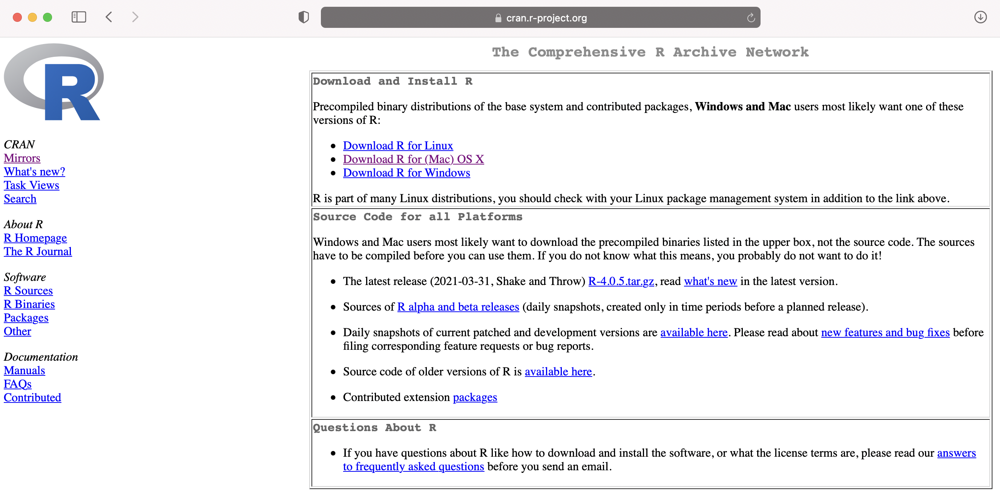
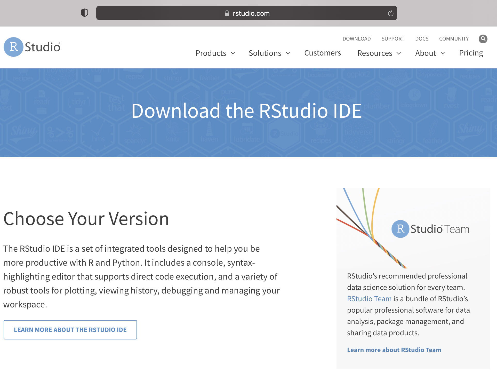
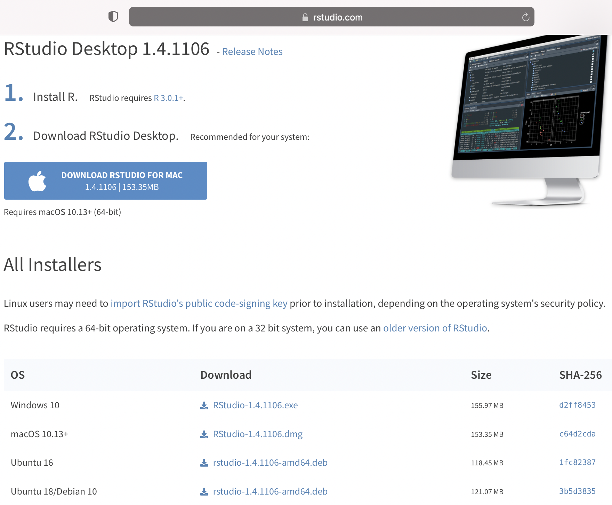
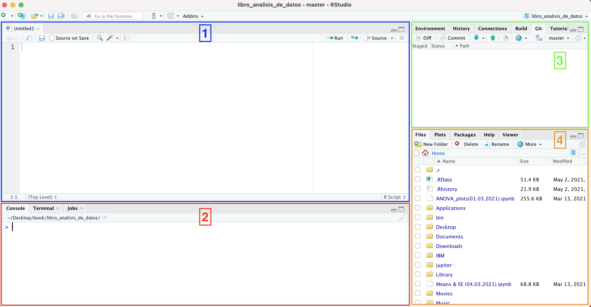

Capítulo 3 ¿Qué es R? Instalando R y RStudio
3.1 Definiendo R
R es un lenguaje de programación que fue lanzado de manera estable el año 2000 por Robert Gentleman y Ross Ihaka (1993) del Departamento de Estadística de la Universidad de Auckland (Nueva Zelanda). Para esto, ellos se basaron en el lenguaje de programación S desarrollado en los laboratorios Bell de Estados Unidos en 1970. R fue diseñado con el fin exclusivo de construir un lenguaje para el análisis estadístico. De acuerdo al TIOBE programming community index (marzo de 2021), R ocupa el puesto 11 entre los lenguajes de programación más populares, toda una sorpresa para una herramienta que fue pensada solo para propósitos estadísticos.
R es un lenguaje de programación orientado a objetos. ¿Pero qué quiere decir esto? Para mantener las cosas simples, diremos que este tipo de lenguajes permite definir tipos de datos y, al mismo tiempo, definir operaciones que se aplican a estos mismos tipos de datos. Por ejemplo, desde un punto de vista estadístico, podemos definir un objeto como una variable x = 16 y cada vez que ejecutemos x, R imprimirá 16. También podremos ejecutar algunas funciones sobre la variable o el objeto que acabamos de crear. Por ejemplo, si escribimos en R sqrt(x), nos devolverá la raíz cuadrada de 16 que es 4, y cuyo valor está almacenado en x. sqrt() es una función base (es decir, que ya existe) en R que entrega la raíz cuadrada de un valor o variable que esté dentro del paréntesis. De este modo, no tenemos que estar escribiendo de maneras engorrosas la raíz cuadrada y podemos aplicar estas funciones en las variables ya definidas. ¡R lo hace mas fácil para nosotros!
Habiendo definido brevemente R, ahora nos enfocaremos en instalar R en nuestro computador. Luego de esto, pasaremos rápidamente a la descarga de RStudio, el cual es el entorno de desarrollo integrado más popular y casi por definición para interactuar con R y el que usaremos a lo largo de este curso. Nos detendremos un poco en describir RStudio, para describir sus principales paneles y diálogos. Por ahora vamos a instalar R.
3.2 Instalando R
Para esto debemos ir a la siguiente website:

Figura 3. Página web de inicio de R.
En la parte superior, aparecerá un cuadro con tres opciones diferentes de descarga según el sistema operativo que use tu computador (i.e., Windows, OS X o Linux). Dale clic a la opción que corresponda a tu caso.
3.2.1 R para Windows
A pesar de que la página de R no es particularmente “estética”, puedes fácilmente visualizar y clicar la opción de descarga para Windows. Una vez hayas seleccionado este enlace, dale clic a “install R for the first time”. Esto te llevará finalmente a la página de descarga donde tienes que clicar el enlace que dice “Download R 4.0.5 for Windows (85 megabytes, 32/64 bit)” (o cual sea la versión que veas al momento de descargar R). Esto iniciará la descarga de un archivo, el cual tardará unos pocos minutos dependiendo de tu conexión a internet y otras variables. Ya descargado, haz doble clic para instalarlo y responde apropiadamente las preguntas que haga Windows para su instalación y ubicación. Seguir las opciones por defecto por lo general es una buena idea. Ahora ya teniendo instalado R en tu computador, puedes ir al menú de inicio y abrirlo.
3.2.2 R para Mac
Si tienes un ordenador Mac, dale clic al enlace correspondiente a Mac OS X. Esto te llevará a una página donde aparece la opción “R for Mac OS X”. Bajo el subtítulo “Latest release:”, encontrarás un enlace con la versión que necesitas (al momento de escribir este texto, yo vi el siguiente link: “R-4.0.5.pkg (notarized and signed)”). Como resultado tu empezarás a descargar el instalador que en mi caso decía “R-4.0.5.pkg”. Sigue el proceso normal de instalación de Mac para instalar R.
3.2.3 R para Linux
Para este caso, debo decir que nunca he instalado un programa en Linux, por lo que no soy de mucha ayuda aquí (sorry guys!) y voy a dar una explicación que he encontrado en la web. Deberías darle clic en el enlace “Download R for Linux”. En esa página, tu encontrarás directorios para Debian, Red Hat, Suse y Ubuntu cada una con sus respectivas instrucciones. Una vez que tengas instalado R, puedes correrlo desde la línea de comando tan solo escribiendo R.
3.3 Instalando RStudio
Ahora que ya tenemos R en nuestro computador es bueno recordar que R es un lenguaje de programación. Digo esto porque nosotros podemos interactuar con R de diferentes maneras. Una forma es interactuar con R a través de la consola que está instalada en nuestros laptops. Y para serles brutamente honesto, esta no es la manera más eficiente de hacerlo. En cambio, lo que les propongo es usar un software libre para dicho propósito. Es aquí cuando empezamos a hablar de RStudio, el cual es un programa diseñado para hacer nuestras vidas más fáciles cuando interactuemos con R. Si bien hay diferentes herramientas para comunicarse con R, RStudio es por masacre la manera más popular de hacerlo y que, prácticamente, se ha convertido en LA forma de hacer análisis de datos. RStudio es lo que se conoce como un entorno de desarrollo integrado (Integrated Development Environment, IDE). Para seguir con las explicaciones simples y que nos permitan seguir avanzando sin mayores problemas con nuestro curso, diremos que un IDE es un software especializado que ha sido pensado para proporcionar las herramientas necesarias para un desarrollo ágil y que cuenta con elementos como un editor, una consola, funciones de autocompletado y resaltado de sintaxis, entre otras funciones. Si bien esto aun puede parecer algo complicado, no se preocupen, en la medida que vayamos avanzando en este curso iremos ilustrando los puntos de la definición. Por ahora lo que haremos es descargar RStudio en nuestro computador. Para esto, utilizaremos el siguiente enlace:

Figura 4. Página web de inicio de RStudio.
Si bajas un poco a lo largo de la página web de RStudio, te encontrarás con las opciones que aparecen en la figura 5. En este caso, aparece la opción de descarga de RStudio para el sistema operativo de Mac (en el cuadro azul a la izquierda de la imagen Download RStudio for Mac) porque la página web de RStudio genera automáticamente el link que cada usuario necesita. Si tienes Windows, aparecerá un link para tu sistema operativo.

Figura 5. Links de descarga de RStudio para tu sistema operativo.
3.3.1 Explorando RStudio
Haciendo un breve resumen de lo que hemos hecho en este capítulo, acabamos de descargar dos cosas: el lenguaje de programación R y RStudio. Recalco esto porque algunos usuarios nóveles tienden a descargar solo uno de ellos y no lo dos. Para este curso es necesario tener ambos.
OK, una vez descargado RStudio en nuestro computador, procederemos a seleccionarlo y abrirlo. Una vez abierto, deberían ver una pantalla similar a la que se muestra en la figura 6. En ella, aprovecharemos de describir los principales 4 paneles que allí se observan (en algunas ocasiones es necesario hacer aparecer el panel [1] script, para esto dar clic en la parte superior izquierda en File →New file → RScript).

Figura 6. Paneles principales de RStudio.
En la figura 6, hay cuatros rectángulos de diferentes colores, los cuales describen los siguientes paneles:
- Panel 1: Panel de Código (Script)
- Panel 2: Panel de Consola (Console)
- Panel 3: Panel de Entorno (Environment)
- Panel 4: Panel de Archivos (Files)